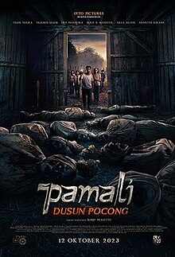

| No | foto | judul | penerbit |
|---|---|---|---|
| 1 | TRANSFORMERS RISE OF THE BEASTS | Transformers: Rise of the Beasts memilikinya premiere di Marina Bay Sands di Singapura pada 27 Mei 2023, dan dirilis secara teatrikal di Amerika Serikat pada 9 Juni 2023, oleh Paramount Pictures. | |
| 2 | fast and furious 10 | Dengan perkiraan anggaran produksi $340 juta, menjadikannya film termahal kedelapan yang pernah dibuat. Syuting berlangsung hingga Agustus, berlangsung di London, Roma, Turin, Lisbon, dan Los Angeles. | |
| 3 | THE RED one piece | adalah film aksi-petualangan fantasi animasi Jepang 2022 disutradarai oleh Gorō Taniguchi dan diproduksi oleh Toei Animation.[3][4] Ini adalah film fitur kelima belas dari seri film One Piece, berdasarkan dari manga dengan nama yang sama ditulis dan di-ilustrasikan oleh Eiichiro Oda. | |
| 4 | THE FLASH | . Film ini mendapat tinjauan beragam dari para kritikus, yang memuji humor, rangkaian aksi, dan penampilannya, tetapi mengkritik babak ketiga dan efek visualnya. Film ini telah meraup $270,6 juta di seluruh dunia, menjadi salah satu film box-office terbesar sepanjang masa, dengan proyeksi kerugian $200 juta bagi Warner Bros. | |
| 5 |  | pamali di desa pocong | Cerita video gim itu dikembangkan menjadi film y Baca artikel CNN Indonesia "Sinopsis Pamali: Dusun Pocong, Petaka Mengerikan Imbas Langgar Adat" selengkapnya di sini: https://www.cnnindonesia.com/hiburan/20231012151743-220-1010410/sinopsis-pamali-dusun-pocong-petaka-mengerikan-imbas-langgar-adat. Download Apps CNN Indonesia sekarang https://app.cnnindonesia.com/ |